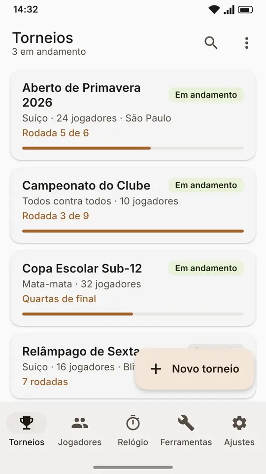
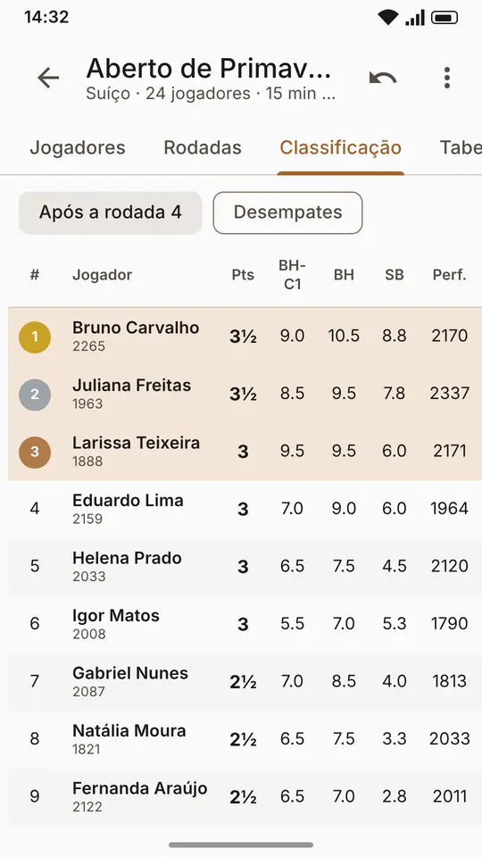
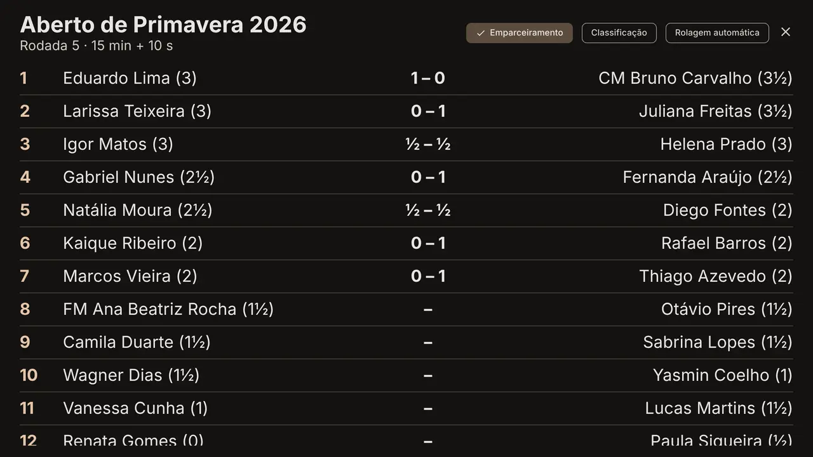
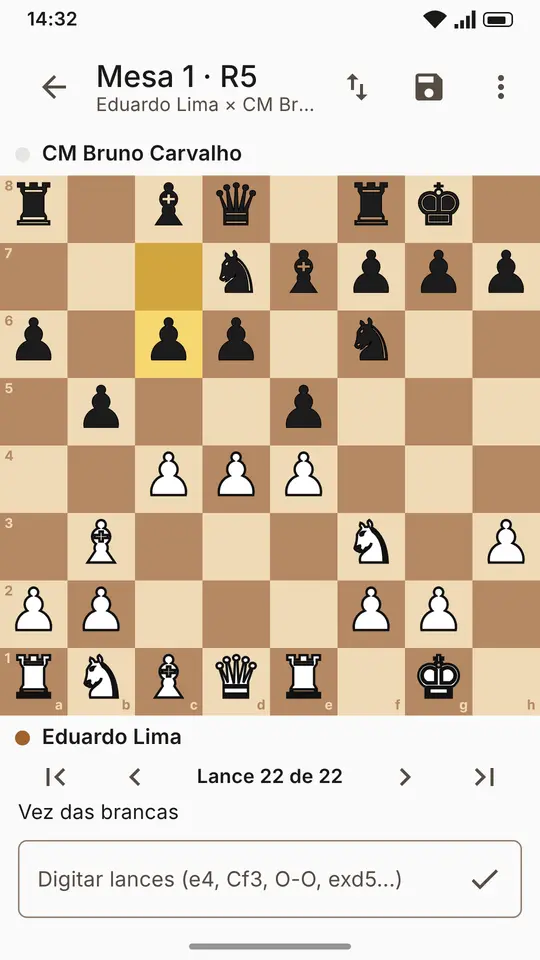
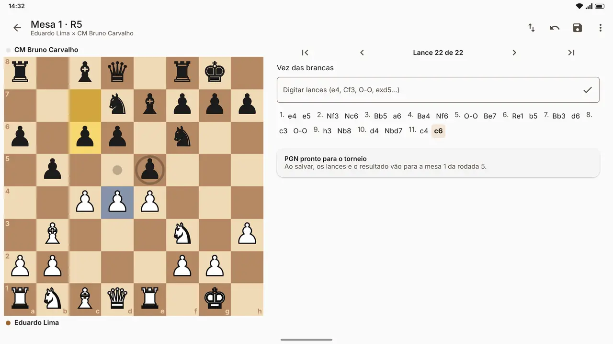
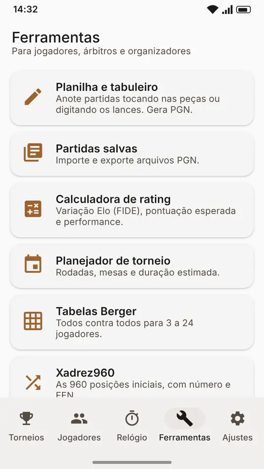
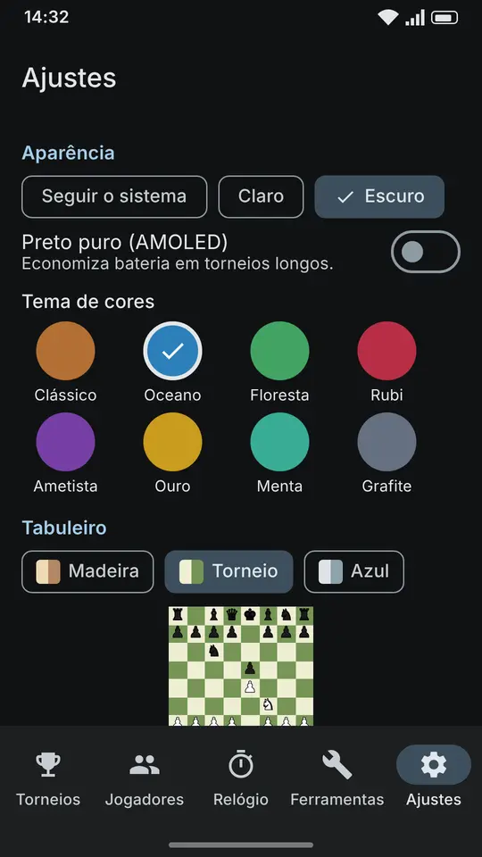

Como usar
Este guia mostra o caminho de um torneio inteiro e o uso das ferramentas. Toque num tópico para ir direto a ele.
- 1. Criar um torneioSistema, rodadas e desempates
- 2. Inscrever jogadoresNa hora, pelo cadastro ou por planilha
- 3. Rodadas e resultadosGerar, lançar e corrigir
- 4. Ajustes do árbitroByes, retiradas e edição manual
- 5. ClassificaçãoDesempates e rating
- 6. Publicar e exportarWhatsApp, PDF, TRF, PGN, projetor
- 7. RelógioRitmos, períodos e árbitro
- 8. Planilha e tabuleiroAnotar partidas e gerar PGN
- 9. FerramentasRating, Berger, Xadrez960, regras
- 10. Temas e backupAparência e cópia de segurança
1. Criar um torneio
- Na aba Torneios, toque em Novo torneio.
- Dê um nome e escolha o sistema:
Sistema Quando usar Sistema Suíço Muitos jogadores e poucas rodadas. Ninguém é eliminado. Todos contra todos Grupos pequenos: cada um enfrenta todos (tabelas Berger da FIDE). Turno e returno Todos contra todos duas vezes, com as cores invertidas. Eliminatória (mata-mata) Quem perde sai. A chave é montada pelo rating. - No suíço, defina o número de rodadas. O app sugere um número que costuma apontar um campeão isolado.
- Opcional: cidade, datas, árbitro, organizador e descrição do ritmo (aparecem nos relatórios), pontuação (1-½-0, 3-1-0…) e a ordem dos desempates.
- Toque em Criar torneio.

2. Inscrever jogadores
Dentro do torneio, abra a aba Jogadores:
- Inscrever — digite nome, rating, título, clube e demais dados.
- Inscrever do cadastro — escolha jogadores já cadastrados na aba principal Jogadores. É o jeito mais rápido para torneios do clube que se repetem.
- Importar planilha — na aba principal Jogadores, importe um arquivo CSV salvo no Excel ou no Google Planilhas. Colunas reconhecidas: Nome, Rating (ou Elo), Título, Fed, Clube, FIDE ID, Nascimento, Sexo.
O número inicial de cada jogador (cabeça de chave) segue o rating. No suíço dá para inscrever atrasados mesmo depois da 1ª rodada.
3. Rodadas e resultados
- Na aba Rodadas, toque em Gerar rodada 1. No todos-contra-todos aparece Gerar tabela completa, que cria todas as rodadas de uma vez.
- Em cada mesa, toque em 1-0, ½-½ ou 0-1. A barra mostra quantos resultados faltam.
- Para W.O., use o menu ⋮ da mesa: Brancas vencem por W.O., Pretas vencem por W.O. ou W.O. duplo.
- Com todos os resultados lançados, gere a próxima rodada.
Cada rodada suíça passa por uma auditoria: o cartão no topo avisa se houve reencontro, cor forçada ou bye repetido. Quando tudo está certo, aparece Emparceiramento sem violações.
No mata-mata, se a partida terminar empatada, o app pergunta quem avança (depois do desempate rápido ou Armageddon que vocês jogarem).
4. Ajustes do árbitro
Bye e folga
Com número ímpar de jogadores, o suíço dá o bye automaticamente para quem ainda não recebeu. Para dar bye de ½ ponto a quem avisou que vai faltar, abra o jogador na aba Jogadores e marque as rodadas.
Retirar um jogador
Abra o jogador e use Retirar do torneio. Ele não é mais emparceirado, mas os resultados já jogados continuam valendo.
Editar o emparceiramento à mão
- Na rodada, toque no ícone de troca ao lado do número da rodada para entrar no modo de edição.
- Toque em um jogador e depois em outro: os dois trocam de mesa.
- Use Inverter cores, Criar mesa ou Dar bye para os jogadores que ficaram sem mesa.
- Toque em Concluir. A auditoria confere a rodada editada e avisa se alguma regra foi quebrada.
Use Achar jogador / mesa para localizar alguém rapidamente em torneios grandes.
5. Classificação
A aba Classificação mostra pontos e desempates na ordem escolhida. Dá para ver a classificação depois de qualquer rodada.
| Sigla | Critério |
|---|---|
| BH | Buchholz: soma dos pontos dos adversários |
| BH-C1 | Buchholz sem o pior adversário |
| BH-M | Buchholz mediano: sem o pior e o melhor |
| SB | Sonneborn-Berger: pontos dos adversários que você venceu (e metade dos que empatou) |
| CD | Confronto direto entre os empatados |
| Vit / Pr | Número de vitórias / partidas de pretas |
| ARO / TPR | Rating médio dos adversários / performance |
| Koya, Prog | Sistema Koya / pontuação progressiva |
A aba Tabela traz a tabela cruzada. Ao encerrar, o app pode aplicar a variação de rating (fórmula Elo da FIDE, com o fator K de cada jogador) ao cadastro geral.

6. Publicar e exportar
Na aba Resumo do torneio:
| Opção | Para quê |
|---|---|
| Compartilhar classificação | Texto pronto para WhatsApp ou Telegram |
| Imprimir ou salvar PDF | Classificação, tabela cruzada, rodadas e estatísticas para afixar no mural |
| Relatório HTML | Página para publicar no site do clube |
| Arquivo TRF (FIDE) | Formato oficial da FIDE: abre no Swiss-Manager e no Vega e serve para homologação de rating |
| Partidas em PGN | Todas as partidas anotadas, para ChessBase, Lichess etc. |
| Planilha CSV | Classificação completa para Excel ou Google Planilhas |
| Duplicar torneio | Mesmos inscritos e regras, sem rodadas — ideal para torneios semanais |
Modo projetor
Ligue o tablet ou o celular a uma TV e abra o modo projetor: emparceiramento e classificação em letras grandes, com rolagem automática para listas longas.

7. Relógio
- Na aba Relógio, escolha um ritmo pronto (bullet, blitz, rápido, clássico FIDE, delay dos EUA, Armageddon, ampulheta…) ou toque em Criar controle personalizado.
- Coloque o celular entre os jogadores. Quem joga de pretas toca no seu lado para iniciar o relógio das brancas.
- Depois de cada lance, toque no seu lado. O relógio do adversário começa a contar.
| Modo | Como funciona |
|---|---|
| Incremento (Fischer) | Ganha o acréscimo inteiro a cada lance |
| Bronstein | Devolve o tempo gasto no lance, até o limite do acréscimo |
| Delay | O relógio espera alguns segundos antes de descontar (há uma barra mostrando o delay) |
| Vários períodos | Ex.: 90 min para 40 lances + 30 min, com +30 s por lance |
| Ampulheta | O tempo que você gasta passa para o adversário |
Na barra do meio: pausar, reiniciar, ajustes do árbitro (somar ou tirar tempo, corrigir número de lances), estatísticas por lance e som.
8. Planilha e tabuleiro
Anote partidas de duas formas:
- Tocando no tabuleiro: toque na peça e depois na casa de destino. Roque, en passant e promoção são reconhecidos.
- Digitando: no campo Digitar lances, escreva vários lances de uma vez, em português (
e4 e5 Cf3 Cc6 O-O) ou em inglês (Nf3 Nc6). Ideal para passar a súmula de papel para o celular.
O app avisa xeque, mate, afogamento, material insuficiente, tripla repetição e regra dos 50 lances. Use as setas para rever a partida; um lance novo no meio substitui a continuação.
Pelo menu ⋮: copiar ou compartilhar o PGN, salvar arquivo .pgn, colar um PGN, copiar o FEN ou começar de uma posição.



9. Ferramentas
| Ferramenta | O que faz |
|---|---|
| Partidas salvas | Guarda partidas avulsas; importa e exporta PGN com várias partidas |
| Calculadora de rating | Variação Elo pela fórmula da FIDE, pontuação esperada e performance |
| Planejador de torneio | Rodadas, mesas e duração estimada para cada sistema e ritmo |
| Tabelas Berger | Emparceiramento oficial do todos-contra-todos, de 3 a 24 jogadores |
| Xadrez960 | Sorteia uma das 960 posições iniciais, com número e FEN |
| Sorteio de cores | Cara ou coroa para decidir quem joga de brancas |
| Guia rápido do árbitro | Resumo das Leis do Xadrez da FIDE: lance ilegal, tempo, empates, celular |
| Tabuleiro de análise | Monte qualquer posição colando um FEN |
10. Temas e backup
Em Ajustes:
- Aparência: claro, escuro ou seguir o sistema; preto puro (AMOLED); 8 temas de cores; cores do papel de parede (Android 12+).
- Tabuleiro: 6 temas, coordenadas e indicação de lances possíveis.
- Relógio: som, vibração, alerta de pouco tempo e a opção de continuar após a queda de bandeira.
- Dados e backup: Exportar backup gera um arquivo com tudo (torneios, jogadores, partidas e ajustes). Use Restaurar no aparelho novo.

Dúvidas frequentes
Precisa de internet?
Não. O app funciona totalmente offline, inclusive no salão de jogos sem sinal.
O emparceiramento suíço é homologado pela FIDE?
Não. O Chess Box segue os princípios do sistema holandês da FIDE (sem reencontros, controle de cores, grupos de pontuação), mas não é um programa homologado. Para torneios que valem rating FIDE, exporte o arquivo TRF e confira as rodadas num programa homologado.
Quantos jogadores cabem num torneio?
Não há limite fixo. Torneios com centenas de jogadores são emparceirados em menos de um segundo.
Como passo meus dados para outro celular?
Em Ajustes, use Exportar backup, envie o arquivo para o novo aparelho e use Restaurar.
Posso abrir um torneio do Swiss-Manager ou do Vega?
Sim, se o programa exportar no formato TRF da FIDE. Use Importar TRF na lista de torneios.
O relógio continua contando com a tela apagada?
A tela fica ligada enquanto o relógio está aberto. Se você sair do app, o relógio pausa automaticamente.